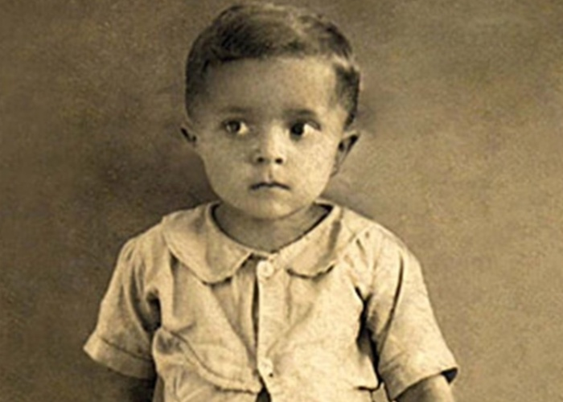
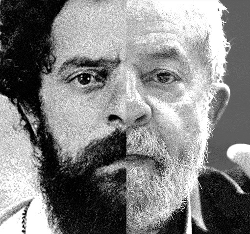

Infância


Lula nasceu em 27 de outubro de 1945 em Garanhuns (PE), numa família de lavradores.
Em busca de uma vida melhor migrou com a família em dezembro de 1954, para São Paulo.
Com os pais Aristides Inácio da Silva e Eurídice Ferreira de Melo e outros sete irmãos,
morou em Vicente de Carvalho, um bairro pobre na periferia do Guarujá.
Luiz Inácio da Silva é o sétimo dos oito filhos de Aristides Inácio da Silva e Eurídice Ferreira de Melo,
um casal de lavradores iletrados que vivenciaram a fome e a miséria na zona mais pobre de Pernambuco.
Educação e Trabalho


Já em São Paulo, a fim de contribuir na renda familiar, começou a trabalhar,aos doze anos, em uma tinturaria.
Durante o mesmo período também trabalhou como engraxate e auxiliar de escritório.
Aos catorze começou a trabalhar nos Armazéns Gerais Colúmbia,
onde teve a carteira de trabalho assinada pela primeira vez,
permanecendo ali por seis meses. Ainda em 1961, foi aluno no curso de tornearia mecânica na escola (SENAI)
Roberto Simonsen, no bairro do Ipiranga.
Presidência da República (2003-2011)


Luiz Inácio Lula da Silva, ex-metalúrgico e ex-sindicalista,era eleito presidente do Brasil em 2002,Candidato do Partido dos Trabalhadores (PT),
ele foi eleito com votação recorde de 50 milhões de votos ja Como presidente, Lula seguiu a política econômica de seu antecessor, Fernando Henrique Cardoso,
garantindo ao Brasil o desenvolvimento econômico. Por conta do seu carisma, recebeu elogios públicos de vários líderes mundias.